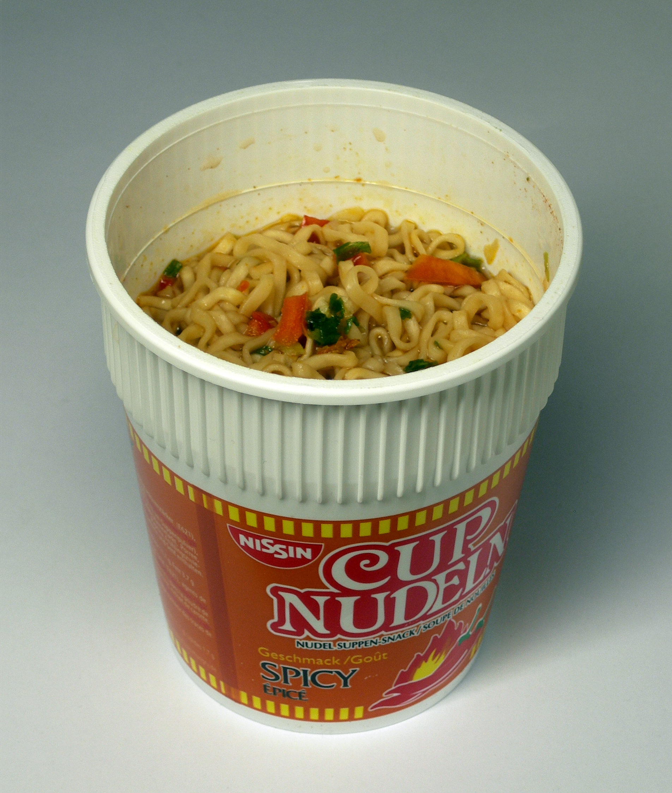

Instant Noodles

Here is how to make a instant noodles
Required Materials:
- 1 Microwaveable Cup Noodle
- Microwave
- Potable Water
- Chopsticks or Fork
Instructions:
- Open the lid of the cup noodle while not taking the over entirly off
- Fill the cup with water up to the line slightly above the noodles
- Place the cup with water inside into the microwave and cook for 4 minutes
- Once finished, let cup sit for a minute before opening
- Open the lid and stur until the noodles are all free flowing
- Grab eating utensil and enjoy
Home